FEIRA DOS ESTADOS DO BRASIL 2026
Conhecendo a cultura, história, economia e tradições que formam a identidade brasileira, através de uma feira de ciências, expandindo nossos conhecimentos através dos estados brasileiras e seus conhecimentos.
23 Estados Representados
Turmas de Ensino Médio
Cultura e Ciência
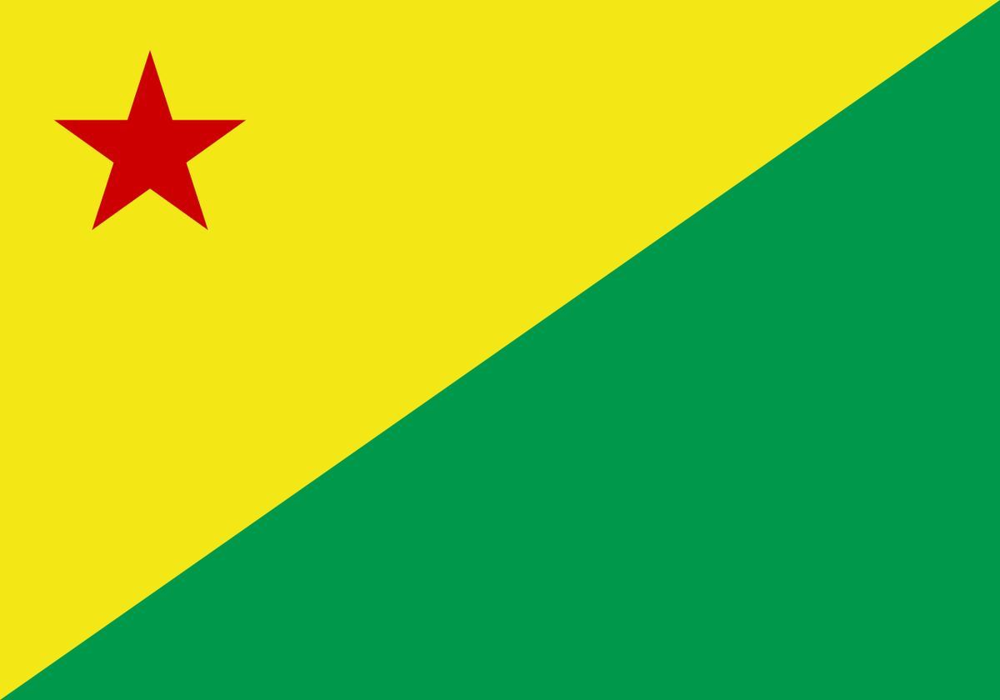
ACRE-AC
2°A Cooperativismo
Prof: Kátia Soares
NORTE
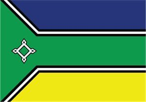
AMAPÁ-AP
3° Integral "B"
Prof: Jefferson Alexandre
NORTE
AMAZONAS-AM
2°A Matutino
Prof: Jeane Frandique
NORTE
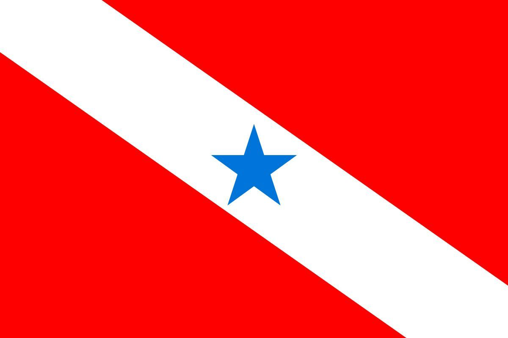
PARÁ-PA
3C Matutino
Prof: Fialho Caetano
NORTE
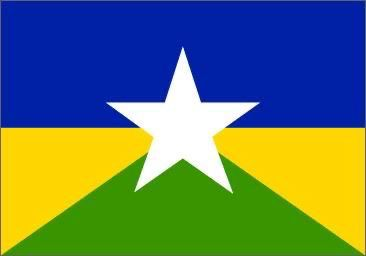
RONDÔNIA-RO
1º Matutino A
Prof: Pedro Paulo
NORTE
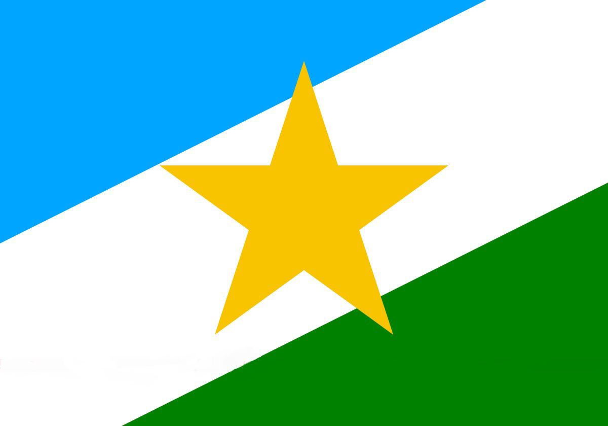
RORAIMA-RR
2º Integral B
Prof: Jirlan Fontes
NORTE
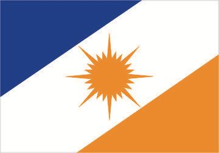
TOCANTINS-TO
1º Artesanato B
Prof: Marta
NORTE
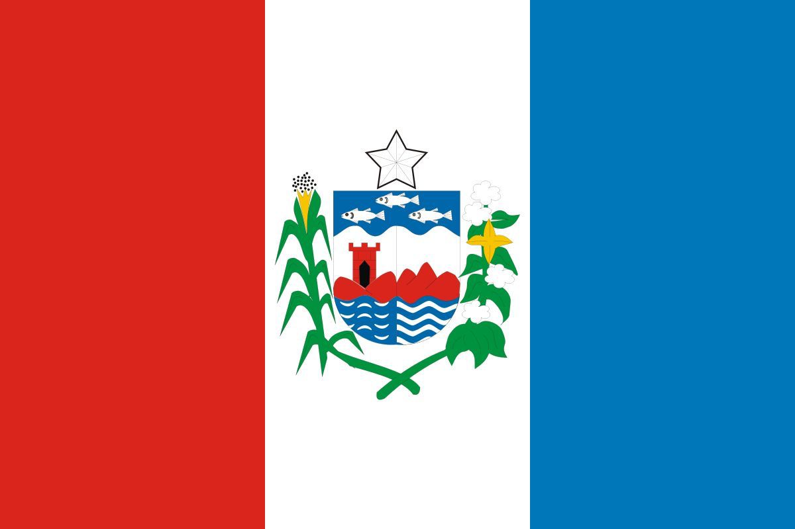
ALAGOAS-AL
2º Integral A
Prof: Antônio Bispo
NORDESTE
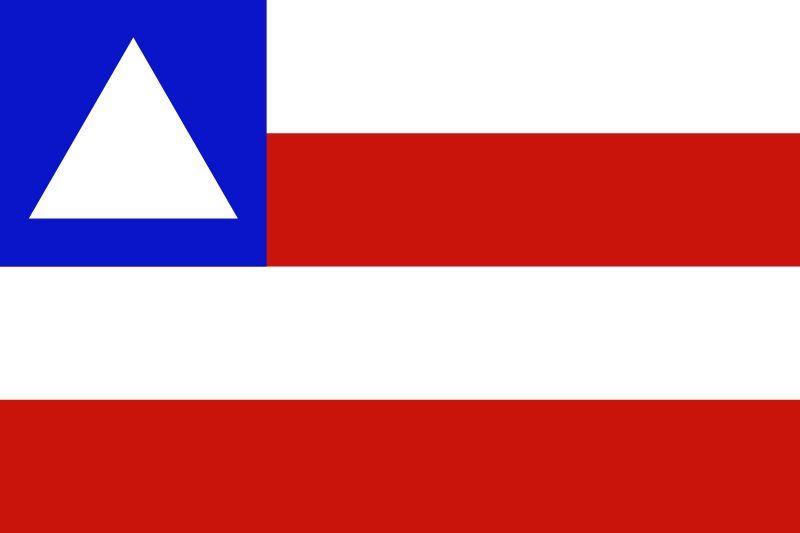
BAHIA-BH
1º A cooperativismo
Prof: Antônio Carlos
NORDESTE
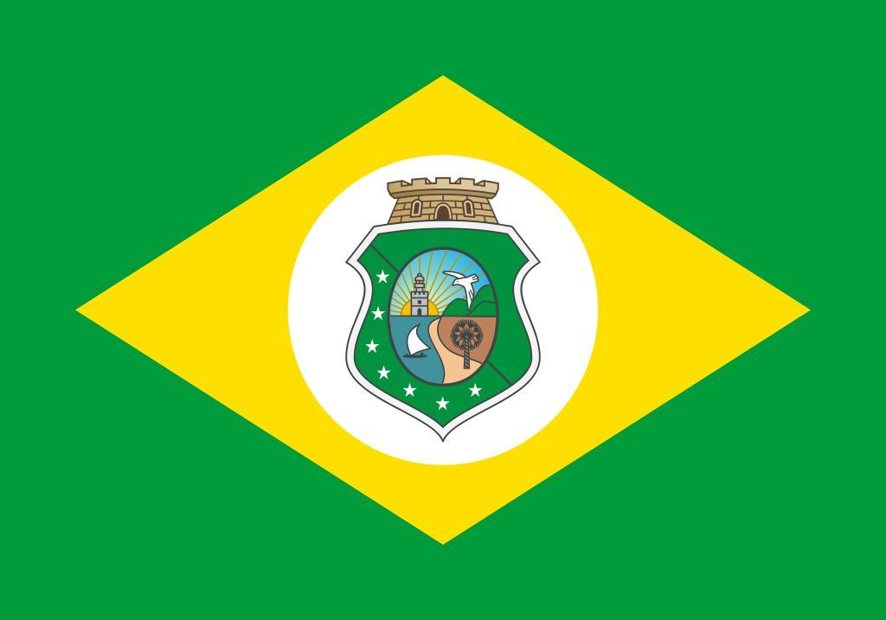
CEARÁ-CE
3º Matutino A
Prof: Elaine Lourenço
NORDESTE
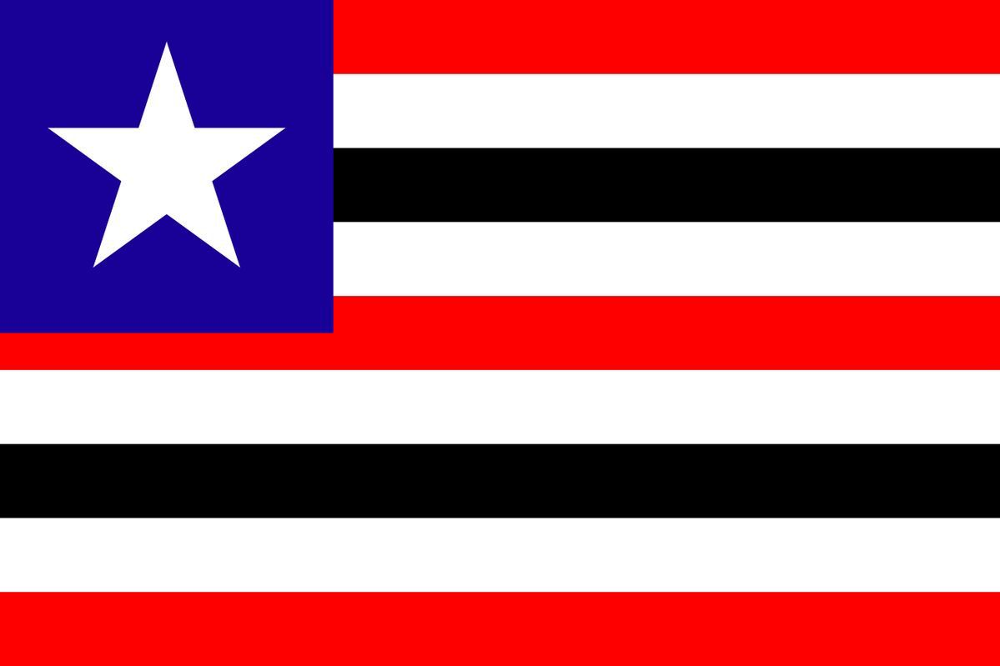
MARANHÃO-MA
3º Integral A
Prof: Eduina França
NORDESTE
PARAÍBA-PB
3º Matutino D
Prof: Tatiana Almeida
NORDESTE
PERNAMBUCO-PE
2º Integral C
Prof: Eliana
NORDESTE
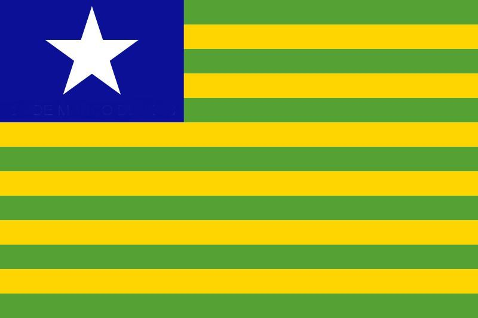
PIAUÍ-PI
2º Matutino C
Prof: Berivânia Porto
NORDESTE
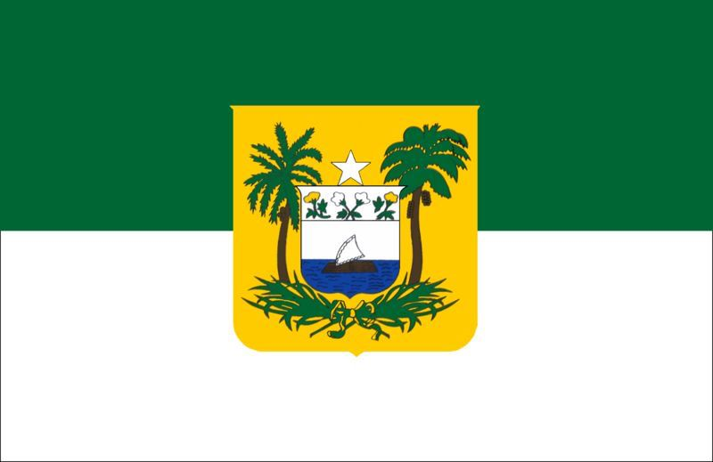
RIO GANDE DO NORTE-RN
1º Matutino B
Prof: Olavo Barros
NORDESTE
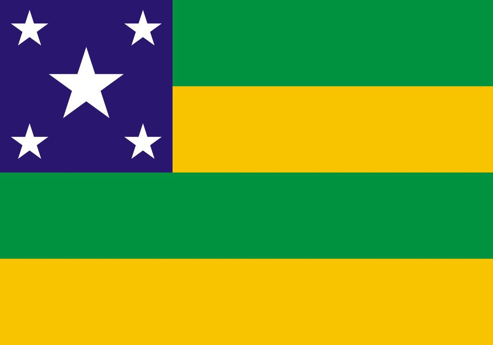
SERGIPE-SE
1º Matutino D
Prof: Edenilza Mendonça
NORDESTE
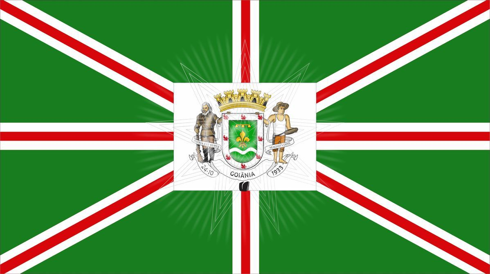
GOIÁS-GO
1º Matutino C
Prof: Juliana Pereira
CENTRO-OESTE
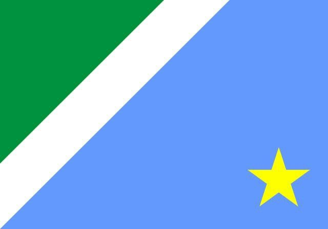
MATO GROSSO DO SUL-MS
2º Matutino D
Prof: Francisco Altemir
CENTRO-OESTE
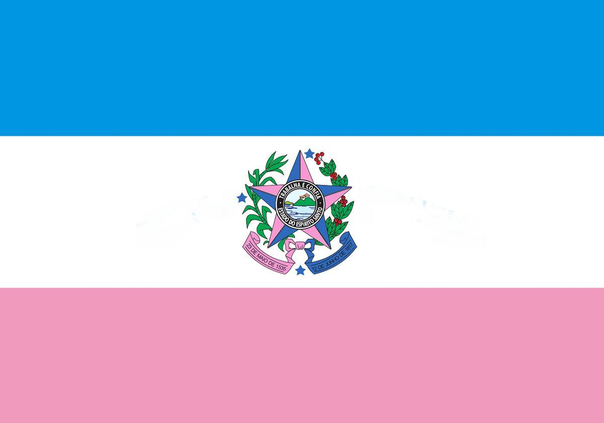
ESPIRITO SANTO-ES
1º Cooperativismo B
Prof: Lucilene Moura
SUDESTE
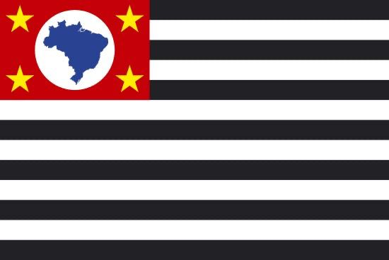
SÃO PAULO-SP
2º Matutino B
Prof: Myrela Valeijo
SUDESTE
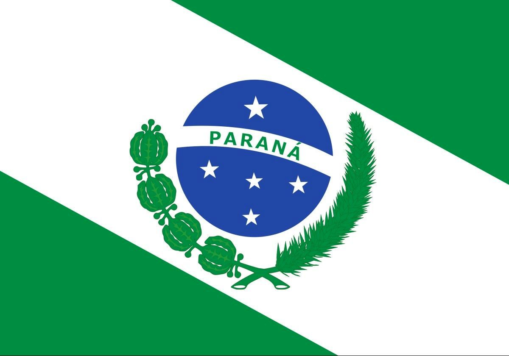
PARANÁ-PR
1º Artes A
Prof: Bete Sete
SUL
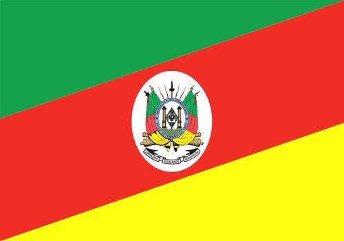
RIO GRANDE DO SUL-RS
3º Matutino B
Prof: Leandro Carvalho
SUL
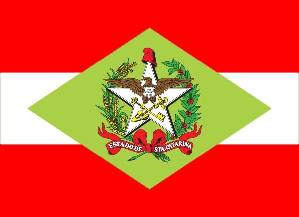
SANTA CATARINA-SC
3º Artesanato A
Prof1: Wendson Damaceno
SUL
O QUE ESTAMOS INVESTIGANDO
A Feira dos Estados do Brasil 2026 tem como objetivo apresentar a diversidade cultural e geográfica do país. Cada turma ficou responsável por pesquisar um estado brasileiro, destacando sua história, cultura, economia, turismo e curiosidades, contribuindo para a construção do conhecimento e a valorização da identidade nacional.
OBJETIVOS
Conhecer o Brasil
Apresentar as características dos estados brasileiros, valorizando sua cultura, história, geografia, economia e tradições por meio de pesquisas e exposições realizadas pelos estudantes.
JUSTIFICATIVA
Por que isso importa
Por que isso importa? O projeto amplia o conhecimento sobre a diversidade do Brasil, incentivando a pesquisa, o respeito às diferenças regionais e o desenvolvimento da aprendizagem de forma prática e interdisciplinar.
PARTICIPAÇÂO
Quem Participa?
Estudantes e professores da Escola Estadual Professor Lima Castro, unidos na construção de uma mostra cultural que representa os estados brasileiros e suas riquezas.